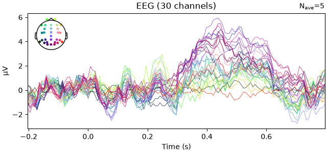
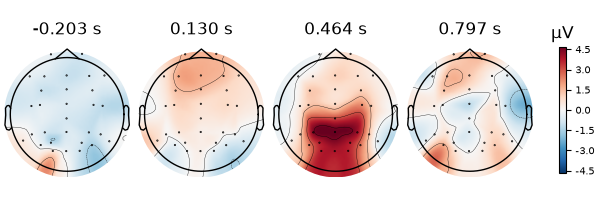
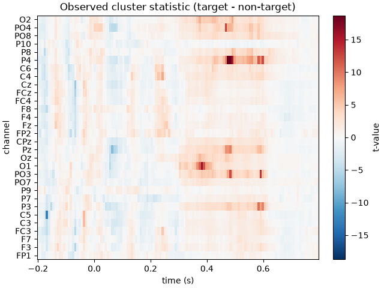

Note
Go to the end to download the full example code or to run this example in your browser via JupyterLite.
Group-level cluster permutation testing with formula contrasts#
Run a cluster-based permutation test on evoked data from several subjects, specifying the contrast with a Wilkinson (R-style) formula. By the end you will have run a paired t-test across subjects and inspected the cluster permutation results.
You will:
load evoked data from multiple subjects
build a long-format dataframe with one row per subject and condition
run
mne.stats.cluster_test()with a Wilkinson-notation formulainspect the cluster permutation results
# Author: Carina Forster <carinaforster0611@gmail.com>
#
# License: BSD-3-Clause
# Copyright the MNE-Python contributors.
Load the required packages#
from pathlib import Path
import matplotlib.pyplot as plt
import numpy as np
import pandas as pd
import mne
Load evoked data for multiple subjects#
We use the P3b data from the freely available ERP CORE dataset: a visual oddball task contrasting rare target stimuli with frequent non-target stimuli. Each subject has an evoked response for both conditions; five subjects are included here.
# path to the P3 dataset
path_to_p3 = mne.datasets.misc.data_path() / "ERP_CORE" / "P3"
# participant IDs available in this dataset (15 to 19)
participant_ids = range(15, 20)
# load each subject's evoked data into a list
evokeds_allsubs = []
for pid in participant_ids:
# filename with the ID zero-padded to three digits
filename_p3 = f"sub-{pid:03d}_ses-P3_task-P3_ave.fif"
p3_file_path = Path(path_to_p3) / filename_p3
evokeds = mne.read_evokeds(p3_file_path)
evokeds_allsubs.append(evokeds)
# split the two conditions into separate per-subject lists
target_only = [evoked[0] for evoked in evokeds_allsubs]
non_target_only = [evoked[1] for evoked in evokeds_allsubs]
Reading /home/circleci/mne_data/MNE-misc-data/ERP_CORE/P3/sub-015_ses-P3_task-P3_ave.fif ...
Found the data of interest:
t = -203.12 ... 796.88 ms (0.20 × stimulus/target/11 + 0.20 × stimulus/target/22 + 0.20 × stimulus/target/33 + 0.20 × stimulus/target/44 + 0.20 × stimulus/target/55)
0 CTF compensation matrices available
nave = 40 - aspect type = 100
No projector specified for this dataset. Please consider the method self.add_proj.
Loaded Evoked data is baseline-corrected (baseline: [-0.203125, 0] s)
Found the data of interest:
t = -203.12 ... 796.88 ms (0.06 × stimulus/non-target/12 + 0.04 × stimulus/non-target/13 + 0.05 × stimulus/non-target/14 + 0.06 × stimulus/non-target/15 + 0.04 × stimulus/non-target/21 + 0.04 × stimulus/non-target/23 + 0.06 × stimulus/non-target/24 + 0.06 × stimulus/non-target/25 + 0.07 × stimulus/non-target/31 + 0.08 × stimulus/non-target/32 + 0.02 × stimulus/non-target/34 + 0.03 × stimulus/non-target/35 + 0.03 × stimulus/non-target/41 + 0.07 × stimulus/non-target/42 + 0.06 × stimulus/non-target/43 + 0.04 × stimulus/non-target/45 + 0.03 × stimulus/non-target/51 + 0.05 × stimulus/non-target/52 + 0.06 × stimulus/non-target/53 + 0.06 × stimulus/non-target/54)
0 CTF compensation matrices available
nave = 160 - aspect type = 100
No projector specified for this dataset. Please consider the method self.add_proj.
Loaded Evoked data is baseline-corrected (baseline: [-0.203125, 0] s)
Found the data of interest:
t = -203.12 ... 796.88 ms ((0.20 × stimulus/target/11 + 0.20 × stimulus/target/22 + 0.20 × stimulus/target/33 + 0.20 × stimulus/target/44 + 0.20 × stimulus/target/55) - (0.06 × stimulus/non-target/12 + 0.04 × stimulus/non-target/13 + 0.05 × stimulus/non-target/14 + 0.06 × stimulus/non-target/15 + 0.04 × stimulus/non-target/21 + 0.04 × stimulus/non-target/23 + 0.06 × stimulus/non-target/24 + 0.06 × stimulus/non-target/25 + 0.07 × stimulus/non-target/31 + 0.08 × stimulus/non-target/32 + 0.02 × stimulus/non-target/34 + 0.03 × stimulus/non-target/35 + 0.03 × stimulus/non-target/41 + 0.07 × stimulus/non-target/42 + 0.06 × stimulus/non-target/43 + 0.04 × stimulus/non-target/45 + 0.03 × stimulus/non-target/51 + 0.05 × stimulus/non-target/52 + 0.06 × stimulus/non-target/53 + 0.06 × stimulus/non-target/54))
0 CTF compensation matrices available
nave = 32 - aspect type = 100
No projector specified for this dataset. Please consider the method self.add_proj.
Loaded Evoked data is baseline-corrected (baseline: [-0.203125, 0] s)
Reading /home/circleci/mne_data/MNE-misc-data/ERP_CORE/P3/sub-016_ses-P3_task-P3_ave.fif ...
Found the data of interest:
t = -203.12 ... 796.88 ms (0.20 × stimulus/target/11 + 0.20 × stimulus/target/22 + 0.20 × stimulus/target/33 + 0.20 × stimulus/target/44 + 0.20 × stimulus/target/55)
0 CTF compensation matrices available
nave = 40 - aspect type = 100
No projector specified for this dataset. Please consider the method self.add_proj.
Loaded Evoked data is baseline-corrected (baseline: [-0.203125, 0] s)
Found the data of interest:
t = -203.12 ... 796.88 ms (0.04 × stimulus/non-target/12 + 0.06 × stimulus/non-target/13 + 0.05 × stimulus/non-target/14 + 0.05 × stimulus/non-target/15 + 0.06 × stimulus/non-target/21 + 0.06 × stimulus/non-target/23 + 0.04 × stimulus/non-target/24 + 0.05 × stimulus/non-target/25 + 0.03 × stimulus/non-target/31 + 0.04 × stimulus/non-target/32 + 0.07 × stimulus/non-target/34 + 0.06 × stimulus/non-target/35 + 0.06 × stimulus/non-target/41 + 0.07 × stimulus/non-target/42 + 0.03 × stimulus/non-target/43 + 0.04 × stimulus/non-target/45 + 0.04 × stimulus/non-target/51 + 0.06 × stimulus/non-target/52 + 0.05 × stimulus/non-target/53 + 0.05 × stimulus/non-target/54)
0 CTF compensation matrices available
nave = 160 - aspect type = 100
No projector specified for this dataset. Please consider the method self.add_proj.
Loaded Evoked data is baseline-corrected (baseline: [-0.203125, 0] s)
Found the data of interest:
t = -203.12 ... 796.88 ms ((0.20 × stimulus/target/11 + 0.20 × stimulus/target/22 + 0.20 × stimulus/target/33 + 0.20 × stimulus/target/44 + 0.20 × stimulus/target/55) - (0.04 × stimulus/non-target/12 + 0.06 × stimulus/non-target/13 + 0.05 × stimulus/non-target/14 + 0.05 × stimulus/non-target/15 + 0.06 × stimulus/non-target/21 + 0.06 × stimulus/non-target/23 + 0.04 × stimulus/non-target/24 + 0.05 × stimulus/non-target/25 + 0.03 × stimulus/non-target/31 + 0.04 × stimulus/non-target/32 + 0.07 × stimulus/non-target/34 + 0.06 × stimulus/non-target/35 + 0.06 × stimulus/non-target/41 + 0.07 × stimulus/non-target/42 + 0.03 × stimulus/non-target/43 + 0.04 × stimulus/non-target/45 + 0.04 × stimulus/non-target/51 + 0.06 × stimulus/non-target/52 + 0.05 × stimulus/non-target/53 + 0.05 × stimulus/non-target/54))
0 CTF compensation matrices available
nave = 32 - aspect type = 100
No projector specified for this dataset. Please consider the method self.add_proj.
Loaded Evoked data is baseline-corrected (baseline: [-0.203125, 0] s)
Reading /home/circleci/mne_data/MNE-misc-data/ERP_CORE/P3/sub-017_ses-P3_task-P3_ave.fif ...
Found the data of interest:
t = -203.12 ... 796.88 ms (0.20 × stimulus/target/11 + 0.20 × stimulus/target/22 + 0.20 × stimulus/target/33 + 0.20 × stimulus/target/44 + 0.20 × stimulus/target/55)
0 CTF compensation matrices available
nave = 40 - aspect type = 100
No projector specified for this dataset. Please consider the method self.add_proj.
Loaded Evoked data is baseline-corrected (baseline: [-0.203125, 0] s)
Found the data of interest:
t = -203.12 ... 796.88 ms (0.07 × stimulus/non-target/12 + 0.04 × stimulus/non-target/13 + 0.06 × stimulus/non-target/14 + 0.03 × stimulus/non-target/15 + 0.04 × stimulus/non-target/21 + 0.05 × stimulus/non-target/23 + 0.06 × stimulus/non-target/24 + 0.05 × stimulus/non-target/25 + 0.07 × stimulus/non-target/31 + 0.04 × stimulus/non-target/32 + 0.03 × stimulus/non-target/34 + 0.06 × stimulus/non-target/35 + 0.05 × stimulus/non-target/41 + 0.06 × stimulus/non-target/42 + 0.05 × stimulus/non-target/43 + 0.04 × stimulus/non-target/45 + 0.03 × stimulus/non-target/51 + 0.05 × stimulus/non-target/52 + 0.07 × stimulus/non-target/53 + 0.05 × stimulus/non-target/54)
0 CTF compensation matrices available
nave = 160 - aspect type = 100
No projector specified for this dataset. Please consider the method self.add_proj.
Loaded Evoked data is baseline-corrected (baseline: [-0.203125, 0] s)
Found the data of interest:
t = -203.12 ... 796.88 ms ((0.20 × stimulus/target/11 + 0.20 × stimulus/target/22 + 0.20 × stimulus/target/33 + 0.20 × stimulus/target/44 + 0.20 × stimulus/target/55) - (0.07 × stimulus/non-target/12 + 0.04 × stimulus/non-target/13 + 0.06 × stimulus/non-target/14 + 0.03 × stimulus/non-target/15 + 0.04 × stimulus/non-target/21 + 0.05 × stimulus/non-target/23 + 0.06 × stimulus/non-target/24 + 0.05 × stimulus/non-target/25 + 0.07 × stimulus/non-target/31 + 0.04 × stimulus/non-target/32 + 0.03 × stimulus/non-target/34 + 0.06 × stimulus/non-target/35 + 0.05 × stimulus/non-target/41 + 0.06 × stimulus/non-target/42 + 0.05 × stimulus/non-target/43 + 0.04 × stimulus/non-target/45 + 0.03 × stimulus/non-target/51 + 0.05 × stimulus/non-target/52 + 0.07 × stimulus/non-target/53 + 0.05 × stimulus/non-target/54))
0 CTF compensation matrices available
nave = 32 - aspect type = 100
No projector specified for this dataset. Please consider the method self.add_proj.
Loaded Evoked data is baseline-corrected (baseline: [-0.203125, 0] s)
Reading /home/circleci/mne_data/MNE-misc-data/ERP_CORE/P3/sub-018_ses-P3_task-P3_ave.fif ...
Found the data of interest:
t = -203.12 ... 796.88 ms (0.20 × stimulus/target/11 + 0.20 × stimulus/target/22 + 0.20 × stimulus/target/33 + 0.20 × stimulus/target/44 + 0.20 × stimulus/target/55)
0 CTF compensation matrices available
nave = 40 - aspect type = 100
No projector specified for this dataset. Please consider the method self.add_proj.
Loaded Evoked data is baseline-corrected (baseline: [-0.203125, 0] s)
Found the data of interest:
t = -203.12 ... 796.88 ms (0.04 × stimulus/non-target/12 + 0.03 × stimulus/non-target/13 + 0.06 × stimulus/non-target/14 + 0.07 × stimulus/non-target/15 + 0.04 × stimulus/non-target/21 + 0.03 × stimulus/non-target/23 + 0.07 × stimulus/non-target/24 + 0.06 × stimulus/non-target/25 + 0.04 × stimulus/non-target/31 + 0.06 × stimulus/non-target/32 + 0.04 × stimulus/non-target/34 + 0.06 × stimulus/non-target/35 + 0.04 × stimulus/non-target/41 + 0.02 × stimulus/non-target/42 + 0.09 × stimulus/non-target/43 + 0.05 × stimulus/non-target/45 + 0.06 × stimulus/non-target/51 + 0.03 × stimulus/non-target/52 + 0.04 × stimulus/non-target/53 + 0.06 × stimulus/non-target/54)
0 CTF compensation matrices available
nave = 160 - aspect type = 100
No projector specified for this dataset. Please consider the method self.add_proj.
Loaded Evoked data is baseline-corrected (baseline: [-0.203125, 0] s)
Found the data of interest:
t = -203.12 ... 796.88 ms ((0.20 × stimulus/target/11 + 0.20 × stimulus/target/22 + 0.20 × stimulus/target/33 + 0.20 × stimulus/target/44 + 0.20 × stimulus/target/55) - (0.04 × stimulus/non-target/12 + 0.03 × stimulus/non-target/13 + 0.06 × stimulus/non-target/14 + 0.07 × stimulus/non-target/15 + 0.04 × stimulus/non-target/21 + 0.03 × stimulus/non-target/23 + 0.07 × stimulus/non-target/24 + 0.06 × stimulus/non-target/25 + 0.04 × stimulus/non-target/31 + 0.06 × stimulus/non-target/32 + 0.04 × stimulus/non-target/34 + 0.06 × stimulus/non-target/35 + 0.04 × stimulus/non-target/41 + 0.02 × stimulus/non-target/42 + 0.09 × stimulus/non-target/43 + 0.05 × stimulus/non-target/45 + 0.06 × stimulus/non-target/51 + 0.03 × stimulus/non-target/52 + 0.04 × stimulus/non-target/53 + 0.06 × stimulus/non-target/54))
0 CTF compensation matrices available
nave = 32 - aspect type = 100
No projector specified for this dataset. Please consider the method self.add_proj.
Loaded Evoked data is baseline-corrected (baseline: [-0.203125, 0] s)
Reading /home/circleci/mne_data/MNE-misc-data/ERP_CORE/P3/sub-019_ses-P3_task-P3_ave.fif ...
Found the data of interest:
t = -203.12 ... 796.88 ms (0.20 × stimulus/target/11 + 0.20 × stimulus/target/22 + 0.20 × stimulus/target/33 + 0.20 × stimulus/target/44 + 0.20 × stimulus/target/55)
0 CTF compensation matrices available
nave = 40 - aspect type = 100
No projector specified for this dataset. Please consider the method self.add_proj.
Loaded Evoked data is baseline-corrected (baseline: [-0.203125, 0] s)
Found the data of interest:
t = -203.12 ... 796.88 ms (0.06 × stimulus/non-target/12 + 0.04 × stimulus/non-target/13 + 0.05 × stimulus/non-target/14 + 0.04 × stimulus/non-target/15 + 0.09 × stimulus/non-target/21 + 0.04 × stimulus/non-target/23 + 0.03 × stimulus/non-target/24 + 0.04 × stimulus/non-target/25 + 0.04 × stimulus/non-target/31 + 0.04 × stimulus/non-target/32 + 0.07 × stimulus/non-target/34 + 0.04 × stimulus/non-target/35 + 0.07 × stimulus/non-target/41 + 0.03 × stimulus/non-target/42 + 0.01 × stimulus/non-target/43 + 0.08 × stimulus/non-target/45 + 0.04 × stimulus/non-target/51 + 0.07 × stimulus/non-target/52 + 0.05 × stimulus/non-target/53 + 0.04 × stimulus/non-target/54)
0 CTF compensation matrices available
nave = 160 - aspect type = 100
No projector specified for this dataset. Please consider the method self.add_proj.
Loaded Evoked data is baseline-corrected (baseline: [-0.203125, 0] s)
Found the data of interest:
t = -203.12 ... 796.88 ms ((0.20 × stimulus/target/11 + 0.20 × stimulus/target/22 + 0.20 × stimulus/target/33 + 0.20 × stimulus/target/44 + 0.20 × stimulus/target/55) - (0.06 × stimulus/non-target/12 + 0.04 × stimulus/non-target/13 + 0.05 × stimulus/non-target/14 + 0.04 × stimulus/non-target/15 + 0.09 × stimulus/non-target/21 + 0.04 × stimulus/non-target/23 + 0.03 × stimulus/non-target/24 + 0.04 × stimulus/non-target/25 + 0.04 × stimulus/non-target/31 + 0.04 × stimulus/non-target/32 + 0.07 × stimulus/non-target/34 + 0.04 × stimulus/non-target/35 + 0.07 × stimulus/non-target/41 + 0.03 × stimulus/non-target/42 + 0.01 × stimulus/non-target/43 + 0.08 × stimulus/non-target/45 + 0.04 × stimulus/non-target/51 + 0.07 × stimulus/non-target/52 + 0.05 × stimulus/non-target/53 + 0.04 × stimulus/non-target/54))
0 CTF compensation matrices available
nave = 32 - aspect type = 100
No projector specified for this dataset. Please consider the method self.add_proj.
Loaded Evoked data is baseline-corrected (baseline: [-0.203125, 0] s)
Inspect the contrast before testing#
Before running any statistics, look at the effect you are about to test. We form the per-subject difference (target minus non-target) and plot its grand average. A positive deflection means targets evoke the stronger response.
diff_evoked = [
mne.combine_evoked([evoked_target, evoked_non_target], weights=[1, -1])
for evoked_target, evoked_non_target in zip(target_only, non_target_only)
]
grand_avg_diff = mne.grand_average(diff_evoked)
grand_avg_diff.plot()
grand_avg_diff.plot_topomap()


Identifying common channels ...
You should see the largest difference around 400 ms over central-parietal channels – the expected P3b effect, stronger for target stimuli. This is the contrast the cluster test will evaluate formally.
diff_evoked is used only for this visualization. The cluster test below
works from a dataframe holding both conditions and forms the contrast from
the formula.
Build the dataframe for the cluster test#
The formula interface takes a long-format pandas.DataFrame with one
row per observation. Each row holds one subject’s evoked response for one
condition, so every subject contributes two rows (target and non-target).
Every subject must contribute the same set of conditions. The columns are:
evoked: the single-subjectEvokedobjectcondition: the condition label, referenced by the formulasubject_index: identifies which observations are paired within a subject
evokeds_conditions = target_only + non_target_only
conditions = ["target"] * len(target_only) + ["non-target"] * len(non_target_only)
subject_index = list(participant_ids) * 2
df = pd.DataFrame(
{
"evoked": evokeds_conditions,
"condition": conditions,
"subject_index": subject_index,
}
)
df
Run the cluster test with a formula#
The contrast is written as a Wilkinson (R-style) formula, the same notation
used by R’s lmer/glmer. Here "evoked ~ condition" models the
evoked response as a function of condition: condition is categorical and
is dummy-coded automatically, and an intercept is included implicitly.
formula = "evoked ~ condition"
# Passing ``within_id="subject_index"`` makes this a within-subject (paired)
# test: the two conditions are subtracted within each subject and the resulting
# differences are tested against zero (a one-sample t-test), with the null
# distribution built by sign-flipping those per-subject differences. Because we
# set ``non-target`` as the reference, the difference is formed as
# target minus non-target. Not setting the reference explicitly will order the contrast
# levels alphabetically and the reference will be target.
cluster_result = mne.stats.cluster_test(
df=df, formula=formula, within_id="subject_index", reference="non-target"
)
# We leave ``adjacency`` at its default of ``"auto"``, which reads the sensor
# locations from the data to decide which channels are neighbors, and treats
# consecutive time points as neighbors. Clusters can therefore grow across both
# neighboring sensors and adjacent time points. If your data have no montage,
# ``"auto"`` will say so rather than guess; you can then set one, or build the
# matrix yourself with :func:`mne.channels.find_ch_adjacency` and
# :func:`mne.stats.combine_adjacency`.
print(f"Smallest cluster p-value: {cluster_result.cluster_p_values.min():.4f}")
Could not find a adjacency matrix for the data. Computing adjacency based on Delaunay triangulations.
-- number of adjacent vertices : 30
Using automatic eeg adjacency between 30 channels, combined with a lattice over the remaining 1 dimension.
Subtracting (target - non-target) of column 'condition' before computing cluster statistics.
Using a threshold of 2.776445
Chosen statistic: one-sample T-test -- ttest_1samp_no_p
stat_fun(H1): min=-12.827606381327438 max=18.720182844608466
Running initial clustering …
Found 33 clusters
0%| | Permuting (exact test) : 0/15 [00:00<?, ?it/s]
100%|██████████| Permuting (exact test) : 15/15 [00:00<00:00, 2219.05it/s]
Smallest cluster p-value: 0.0625
The smallest cluster p-value is about 0.06, so no cluster is significant at alpha = 0.05 – and with five subjects none ever could be. Here is why.
The null distribution is built by sign-flipping the five per-subject
difference scores. There are 2 ** 5 = 32 ways to assign signs, but
flipping every sign only mirrors the partition, so just 2 ** (5 - 1) = 16
are distinct. Because the test is exact, all 16 are evaluated rather than
sampled at random – which is why cluster_result.n_permutations below
reports 16 rather than the 1024 requested by default. Fifteen of those are
surrogates (you will see 15/15 in the progress log); the sixteenth is the
arrangement actually observed.
The finest p-value this can resolve is therefore 1 / 16 = 0.0625, so even the
most extreme possible cluster lands just above 0.05. The near-0.0625 result
means the observed cluster was the most extreme one – there is simply not
enough data to reach significance. Detecting an effect here would need more
subjects; that, not the specific p-value, is the takeaway.
Inspect the results#
The result object carries the observed cluster-level statistics. We plot the observed t-values as a heatmap with time on the x-axis and channel names on the y-axis. Because the contrast is target minus non-target, positive t-values mean a stronger response to targets, matching the difference plotted earlier.
print(f"Number of permutations run: {cluster_result.n_permutations}")
# times (in seconds) and channel names come from the evoked data
times = grand_avg_diff.times
ch_names = grand_avg_diff.ch_names
# stat_obs holds the observed t-values, arranged as (channels, times)
stat_obs = cluster_result.stat_obs
# symmetric colour limits so the diverging colormap is centred on zero
vlim = np.abs(stat_obs).max()
fig, ax = plt.subplots(layout="constrained")
im = ax.imshow(
stat_obs,
aspect="auto",
origin="lower",
extent=[times[0], times[-1], 0, len(ch_names)],
cmap="RdBu_r",
vmin=-vlim,
vmax=vlim,
)
ax.set_yticks(np.arange(len(ch_names)) + 0.5)
ax.set_yticklabels(ch_names)
ax.set_xlabel("time (s)")
ax.set_ylabel("channel")
ax.set_title("Observed cluster statistic (target - non-target)")
fig.colorbar(im, ax=ax, label="t-value")

Number of permutations run: 16
Total running time of the script: (0 minutes 1.237 seconds)